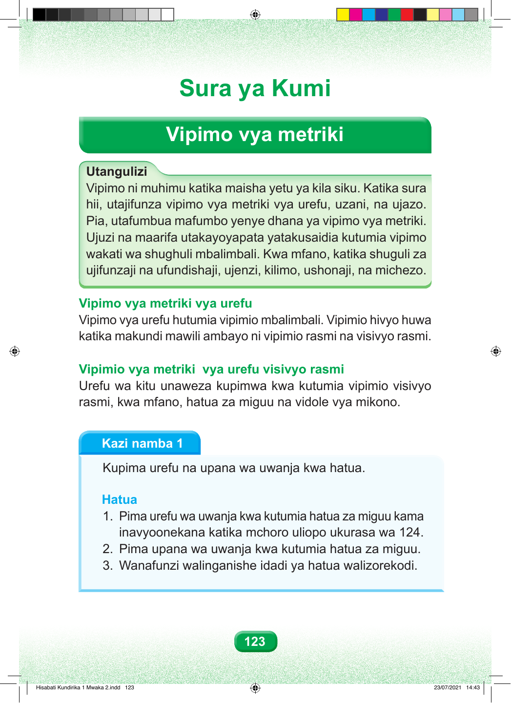

Sura ya Kumi Vipimo vya metriki Utangulizi Vipimo ni muhimu katika maisha yetu ya kila siku. Katika sura hii, utajifunza vipimo vya metriki vya urefu, uzani, na ujazo. Pia, utafumbua mafumbo yenye dhana ya vipimo vya metriki. Ujuzi na maarifa utakayoyapata yatakusaidia kutumia vipimo wakati wa shughuli mbalimbali. Kwa mfano, katika shuguli za ujifunzaji na ufundishaji, ujenzi, kilimo, ushonaji, na michezo. Vipimo vya metriki vya urefu Vipimo vya urefu hutumia vipimio mbalimbali. Vipimio hivyo huwa katika makundi mawili ambayo ni vipimio rasmi na visivyo rasmi. Vipimio vya metriki vya urefu visivyo rasmi Urefu wa kitu unaweza kupimwa kwa kutumia vipimio visivyo rasmi, kwa mfano, hatua za miguu na vidole vya mikono. Kazi namba 1 Kupima urefu na upana wa uwanja kwa hatua. Hatua 1. Pima urefu wa uwanja kwa kutumia hatua za miguu kama inavyoonekana katika mchoro uliopo ukurasa wa 124. 2. Pima upana wa uwanja kwa kutumia hatua za miguu. 3. Wanafunzi walinganishe idadi ya hatua walizorekodi. 123 Hisabati Kundirika 1 Mwaka 2.indd 123 23/07/2021 14:43